화학공학 유체역학 1. 유체역학 입문 및 보존 법칙
유체는 기체, 액체를 일컫는 말이다. 이때 점도가 일정한 유체를 뉴턴성 유체라고 하며 일반적으로 대부분의 유체는 뉴턴성 유체이다.
유체의 한 가지 특징은 압력이다. 물에 깊게 잠수할 수록 압력이 증가하는 데서 알 수 있듯이, 유체는 위치에 따라 압력이 달라지는 특성을 가지고 있다.
액체의 경우 특정 지점에서 압력은 다음과 같음이 알려져있다.
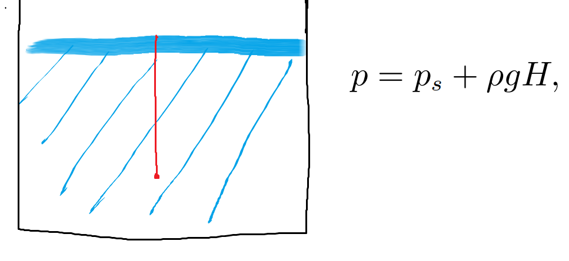
그러나 액체가 아닌 기체의 경우에는, 고도 변화가 클 때 밀도가 일정하지 않으므로 다음 식을 쓰곤 한다.
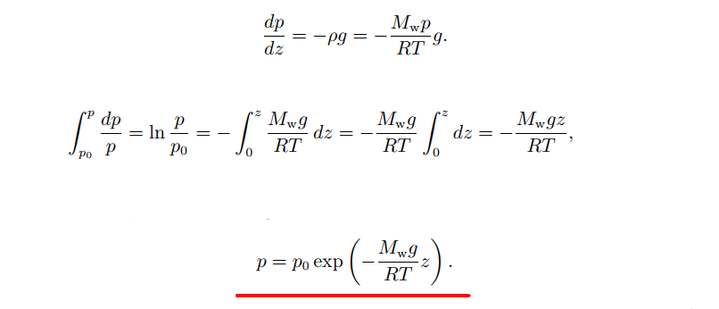
어쨋든 압력이라는 특징이 있는 것이 중요하므로, 굳이 신경 쓸 것은 없다.
유체에 관한 연구는 대부분 보존의 법칙에 근거한다. 여기서 보존의 법칙이란 질량, 에너지, 운동량 보존법칙을 의미한다. 유체역학에서 가장 많이 다루는 경우는 유체가 일정한 파이프를 지나는 경우 이므로, 이에 관해서 생각해보자.
1)질량 보존 법칙(정상상태)
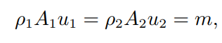
2)에너지 보존 법칙(정상상태)
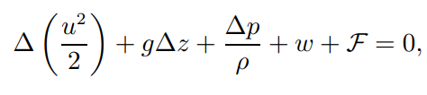
이때, 정상상태,일 효과 없음(=터빈OR 펌프가 아님), 마찰이 없는 유동(관이 짧음), 비압축성 유체일 경우에 베르누이 방정식이 성립한다.
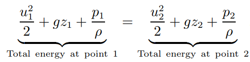
3)운동량 보존 법칙(정상상태)=힘+유동에 의한 운동량 전달
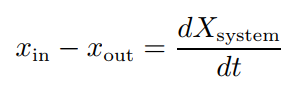
운동량을 미분하면 힘인데, 위 정의에 의해서 운동량 보존은 힘의 수지와 같다. 이때 운동량은 두 가지 원인에 의해서 바뀌게 되는데, 1)힘에 의한 운동량 전달과 2) 유동에 의한 운동량 전달이 있다.
1)힘에 의한 운동량 전달
다음 상황을 보자.
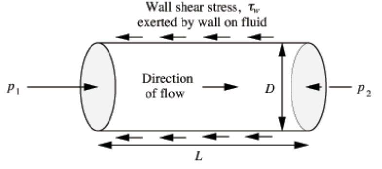
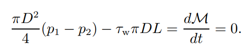
왼쪽으로 가해지는 힘-오른쪽에서 가해지는 힘 식을 세우고, 정상상태이므로 축적되는 운동량은 없다고 하면
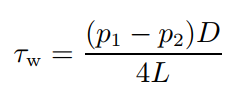
위 식을 얻을 수 있고, 이는 전단 응력을 구할 수 있는 식이다.
2)유동에 의한 운동량 전달:
쉽게 생각해서, 운동량을 가진 물체가 계로 들어오면 계의 운동량이 늘어난다.
이 3가지 법칙을 이용하여 유체역학의 문제를 풀 수 있다.
ex1) 다음 오리피스 판에서 발생하는 총 압력 강하를 구하여라
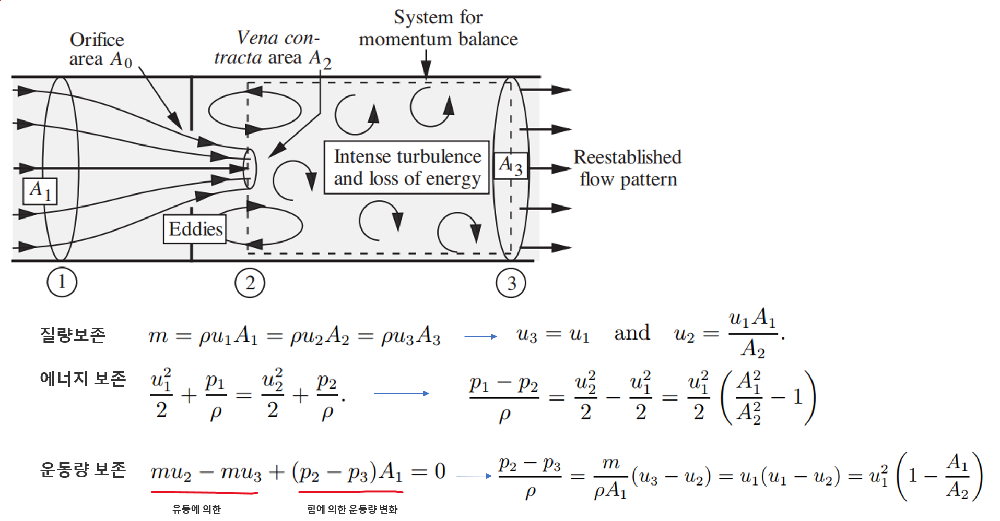 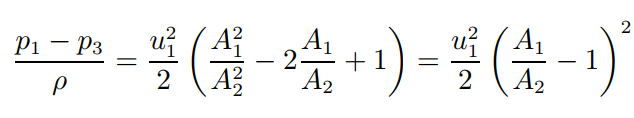
즉 파이프를 지나가면서 압력의 강하가 발생하며 이는 양의 값이다. 이때 이렇게 소모된 에너지는 마찰로 인한 소산이다.
ex2) 탱크 배출 속도는?
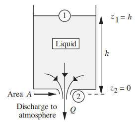 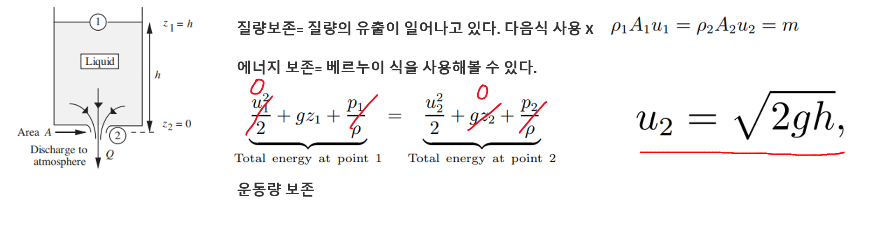
운동량 보존은 쓸 필요가 없었다.
정리:
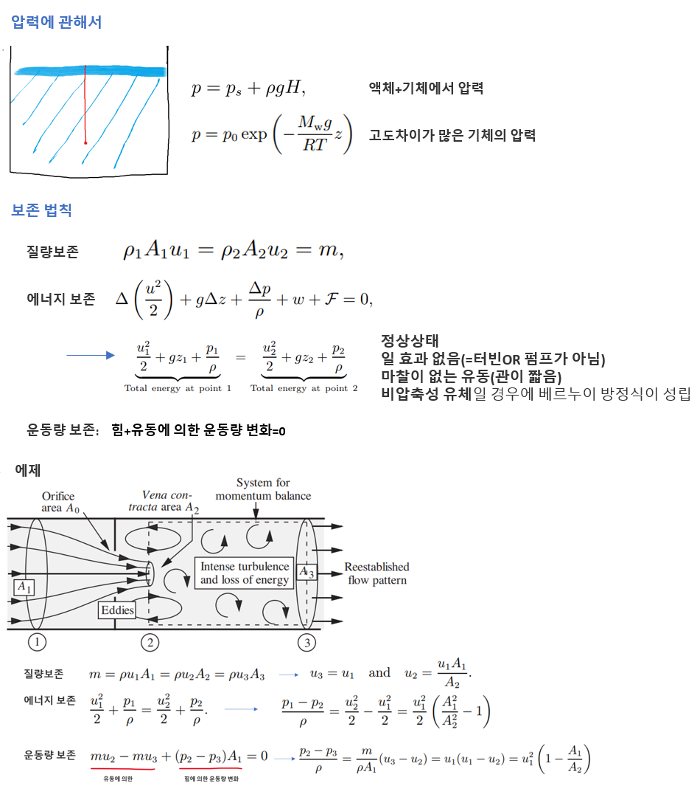